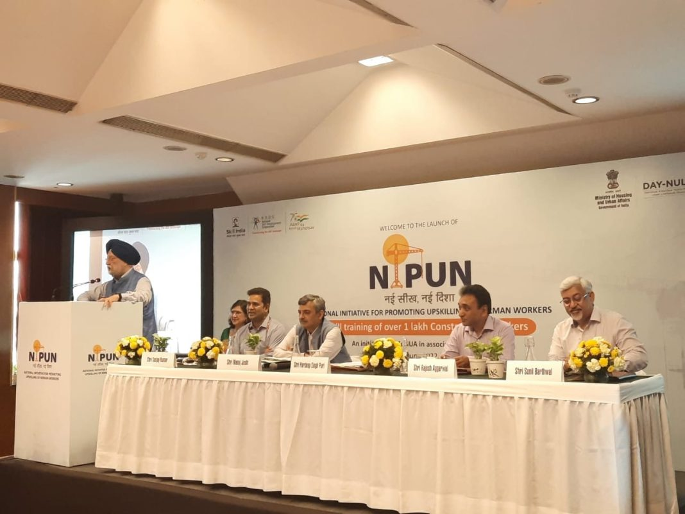

Todays News
Govt launches NIPUN scheme to upskill construction workers
Every year, India needs to build an average of 700 to 900 square meters of urban
space, which is one of the largest construction activities anywhere in the
world. Construction significantly contributes to GDP and generates employment,
so skilling construction workers can yield even better results. As a step in
this direction, Housing and Urban Affairs Minister Hardeep Singh Puri on June 20
launched the National Initiative for Promotion of Upskilling of Nirman workers
(NIPUN).
The NIPUN will strengthen our task force by providing skill training to over 1
lakh construction workers. The Union Minister talked about the relevance of the
scheme by citing the current norm in the construction sector. Upon advertising
for hiring manpower, he explained that a large number of applications will be
received for the positions that do not require skills, and as the number of
positions requiring skills increases, applications will decline.
As a result of the Global housing technology challenge, encouraging results
began to emerge. The government worked on the challenge for one year,
shortlisted 56 technologies from across the globe, and did wonders. In one year
6 Light house projects have been implemented, each having 1,000 houses made with
global, sustainable green technologies. Some of these world class projects have
been completed in record time. It is pertinent to note that the Government
parallely conducts training and workshops on these technologies while completion
of these projects and this NIPUN initiative is an additive. The formal training
under NIPUN will also introduce workers to precautionary measures to take while
working, to safety equipment and digital skills. The Recognition of Prior
Learning certification under NIPUN will also assist workers who have left their
families in their villages and improve their livelihood.
Further, citing the examples of Pragati Maidan Integrated corridor and the
soon-to-be opened Central Vista avenue, the Union Minister talked about how the
government has demonstrated that world class projects can be completed in record
time.
